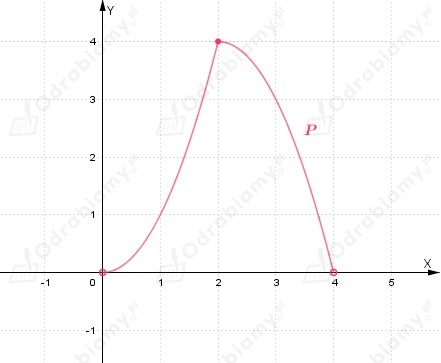
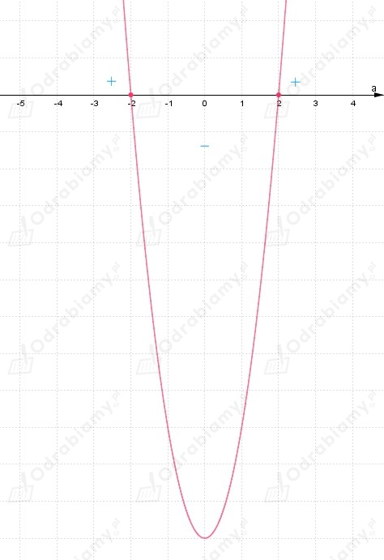
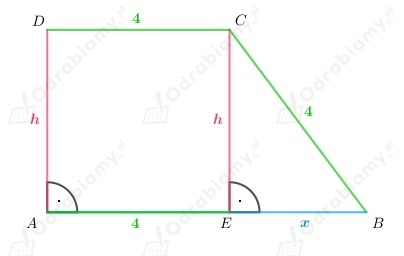
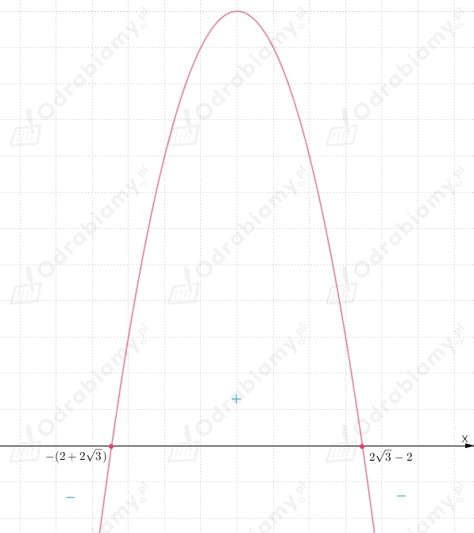

Należy obliczyć granicę:
Zauważmy, że:
oraz
zatem dostajemy:
Wiemy, że:
Odp:
Z treści zadania wiemy, że:
założenia:
Zauważamy, że x2 zawsze jest nieujemne, zatem:
wobec tego:
Wyznaczamy pochodną funkcji f korzystając ze wzoru na pochodną funkcji złożonej:
Obliczamy wartość współczynnika kierunkowego stycznej do wykresu funkcji f:
Odp:
Z treści zadania wiemy, że:
Należy wyznaczyć największa wartość funkcji f w podanym przedziale.
Zauważamy, że funkcja f jest wielomianem, zatem jest funkcją ciągłą.
Wyznaczamy pochodną funkcji f:
Wyznaczamy miejsca zerowe funkcji f':
Rozwiązujemy równanie:
Zauważamy, że wykresem funkcji f' jest parabola ramionami skierowana w górę, zatem:
Korzystamy z warunku dostatecznego istnienia ekstremum.
(Pochodna zmienia znak w punkcie x0=-√2 z ujemnego na dodatni.)
Wnioskujemy, że funkcja f ma minimum w punkcie x0=-√2:
Wyznaczamy wartości funkcji f dla argumentów znajdujących się na końcach przedziału:
Określamy wartość największą spośród wartości:
Zauważamy, że:
Zatem funkcja f przyjmuje największą wartość:
Odp:
Z treści zadania wiemy, że:
Niech:
Należy wyznaczyć wartość parametru m dla którego równanie ma rozwiązanie w przedziale ⟨0, 1〉.
Zatem wyznaczamy wartość najmniejsza i największą funkcji f w przedziale ⟨0, 1〉.
Wyznaczamy pochodna funkcji f:
Wyznaczamy miejsca zerowe funkcji f':
Rozwiązujemy równanie:
Funkcja f' jest funkcja kwadratowa, której wykresem jest parabola ramionami skierowana w górę, więc:
Wobec powyższego zauważamy, że funkcja f osiąga minimum w punkcie x0=1 równe:
Funkcja f jest ciągła w przedziale ⟨0, 1〉 oraz:
Wobec tego wybieramy wartość najmniejsza i największą spośród powyższych wartości:
Wnioskujemy, że:
Odp: Równanie ma rozwiązanie należące do przedziału ⟨0, 1〉, gdy:
Z treści zadania wiemy, że:
Trójkąt AKL jest trójkątem równoramiennym, gdzie:
Wierzchołki K i L należą do boków kwadratu ABCD.
Odcinek |AE|=x jest wysokością trójkąta AKL.
Wiemy, że:
Możemy zauważyć, że odcinek AC jest przekątną kwadratu ABCD, zatem:
Zadanie jest podzielone na dwa przypadki:
1) Punkt K należy do boku BC natomiast punkt L należy do boku CD.
Niech |EC|=y wobec tego:
Możemy zauważyć, że trójkąt LKC jest trójkątem równoramiennym, zatem:
założenia:
Zapisujemy wzór funkcji opisującej pole trójkąta AKL w zależności od zmiennej x:
2) Punkt K należy do boku AB lub pokrywa się z punktem B natomiast punkt L należy
do boku AD lub pokrywa się z punktem D.
Z podobieństwa trójkątów ABD i AKL dostajemy:
zatem:
założenia:
Zapisujemy wzór funkcji opisującej pole trójkąta AKL w zależności od zmiennej x:
Możemy zapisać oba przypadki:
Określamy dziedzinę funkcji:
Badamy ciągłość funkcji:
Zauważamy, że:
zatem
wobec tego funkcja P jest ciągła w x0=2.
Więc funkcja P jest ciągła w całej swojej dziedzinie.
Zauważamy, że funkcja y=-x2+4x jest funkcja kwadratową. Wierzchołek paraboli znajduje się w punkcie (2, 4):
Ramiona paraboli są skierowane w dół oraz miejsca zerowe funkcji:
Ten fragment wykresu funkcji szkicujemy w przedziale (2, 4).
Natomiast funkcja y=x2 jest funkcją kwadratową. Wierzchołek paraboli znajduje się
w punkcie (0, 0) oraz ramiona paraboli są skierowane w górę.
Ten fragment wykresu funkcji P szkicujemy w przedziale (0, 2〉.
Szkicujemy wykres funkcji P:

Z treści zadania wiemy, że:
Należy wyznaczyć wartość najmniejszą i największą funkcji f.
Wyznaczamy wzór funkcji f obliczając granicę:
zauważamy, że:
Wyznaczamy pochodną funkcji f:
Wyznaczamy miejsca zerowe funkcji f':
Rozwiązujemy równanie:

Z wykresu funkcji możemy odczytać, że:
Korzystamy z warunku dostatecznego istnienia ekstremum.
(Pochodna zmienia znak w punkcie a0=-2 z dodatniego na ujemny.)
Wnioskujemy, że funkcja f ma maksimum w punkcie a0=-2:
(Pochodna zmienia znak w punkcie a0=2 z ujemnego na dodatni.)
Wnioskujemy, że funkcja f ma minimum w punkcie a0=2:
Wyznaczamy wartości funkcji f dla argumentów znajdujących się na końcach przedziału:
Określamy wartość najmniejszą spośród wartości:
Zauważamy, że:
Zatem funkcja f przyjmuje najmniejszą wartość: f(2)=-3/4 oraz największą wartość: f(-2)=3/4.
Przyjmijmy oznaczenia jak na rysunku poniżej:

Należy obliczyć długość wysokości trapezu spełniającego warunki zadania, którego pole jest największe.
Korzystając z twierdzenia Pitagorasa dla trójkąta EBC, dostajemy:
założenia:
wobec tego:
Zapisujemy wzór funkcji opisującej pole trapezu w zależności od x:
Wyznaczamy pochodna funkcji P:
Wyznaczamy miejsca zerowe funkcji P':
Rozwiązujemy równanie:

Uwzględniając założenie zauważamy, że:
Zauważamy, że funkcja P ma maksimum w punkcie x0=2√3-2.
Wobec tego pole trapezu jest największe, gdy:
wtedy wysokość trapezu jest równa:
Odp: Wysokość trapezu ABCD spełniającego podane warunki wynosi: